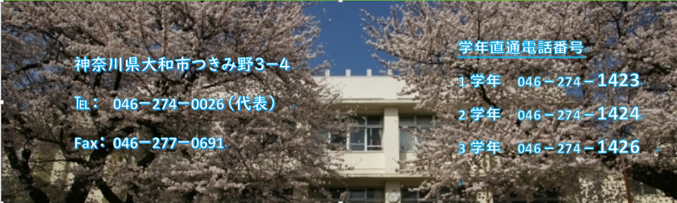
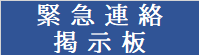

リンク
新型コロナウイルス感染対応に関する本校からのお知らせ
月間・年間行事予定表
悪天候時の対応について（PDF：162KB）
大和高校PTA
大和高校施設開放
総合的な探求の時間
奨学金について
新着情報
8月21日
2020年度学校案内パンフレット
6月15日
分散登校期間の課題(6月15日から6月26日)について
6月2日
登校日と分散登校期間の昇降口への通行について
6月1日
分散登校期間の課題(6月1日から6月12日)について
5月27日
学校再開に向けた準備期間の登校日について
新着情報一覧
新着情報RSS
お知らせ
総合的な探究の時間より
令和2(2020)年度 月間・年間行事予定表
今後の教育活動について(お知らせ)
7月13日から通常登校となった場合の7月行事予定表
万葉樹木園について
お知らせ一覧
お知らせRSS
緊急連絡掲示板
